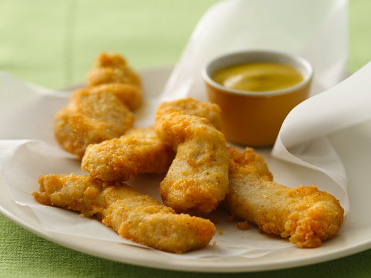

Gluten Free Ultimate Chicken Fingers

Gluten-free diet? You can savor these chicken fingers thanks to Bisquick® Gluten Free mix.Ingredients
Ingredients
- 3/4 cup Bisquick® Gluten Free mix
- 1/2 cup grated Parmesan cheese
- 1 teaspoon paprika
- 1/2 teaspoon salt or garlic salt
- 3 boneless skinless chicken breasts (1 lb), cut crosswise into 1/2-inch strips
- 2 eggs, slightly beaten
- 3 tablespoons butter or margarine, melted
Steps
- Heat oven to 450°F. Line cookie sheet with foil; spray with cooking spray.
- Stir Bisquick mix, cheese, paprika and salt in shallow baking dish. Dip chicken strips into eggs, then coat with Bisquick mixture; repeat dipping in eggs and Bisquick mixture. Place chicken on cookie sheet. Drizzle butter over chicken.
- Bake 12 to14 minutes, turning after 6 minutes, until no longer pink in center.